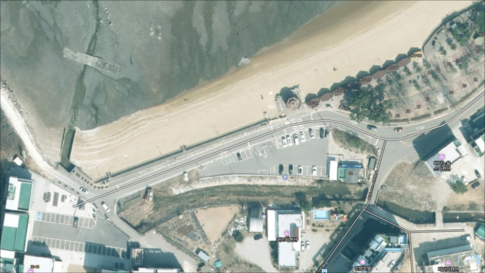
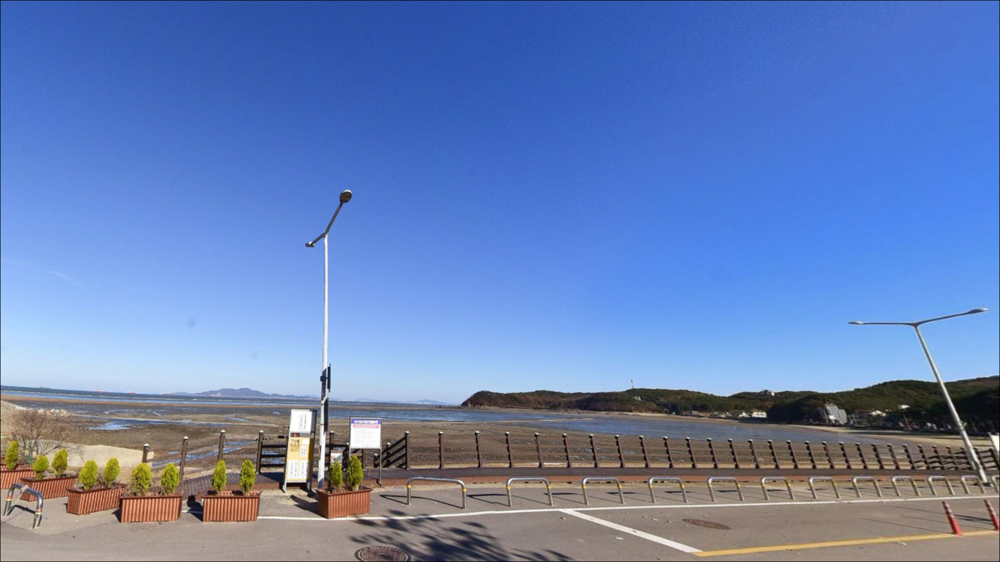
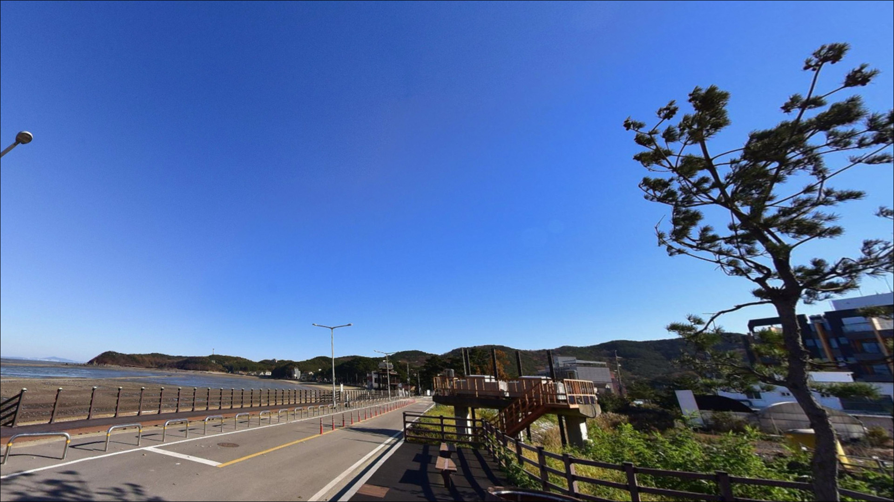
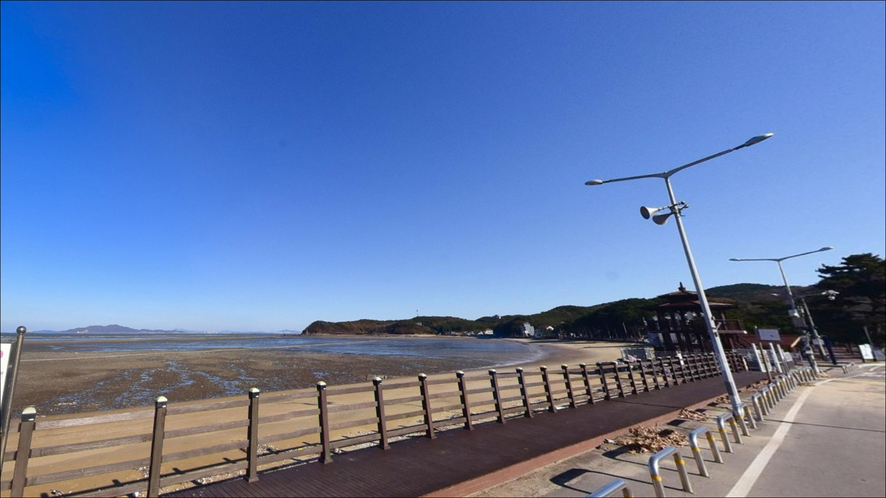
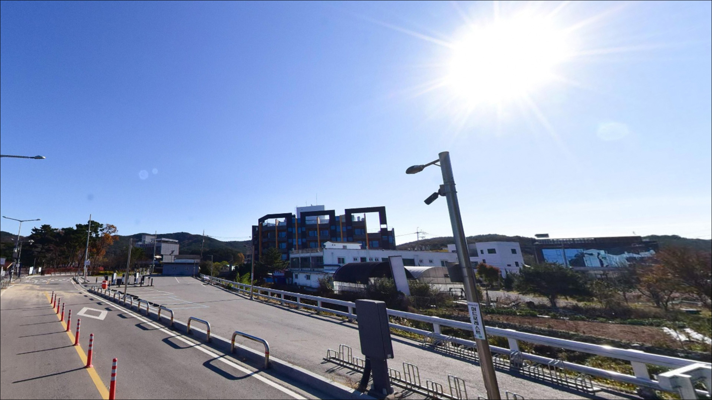
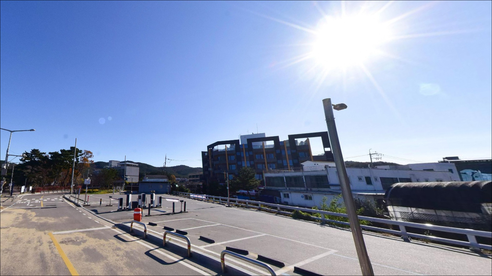
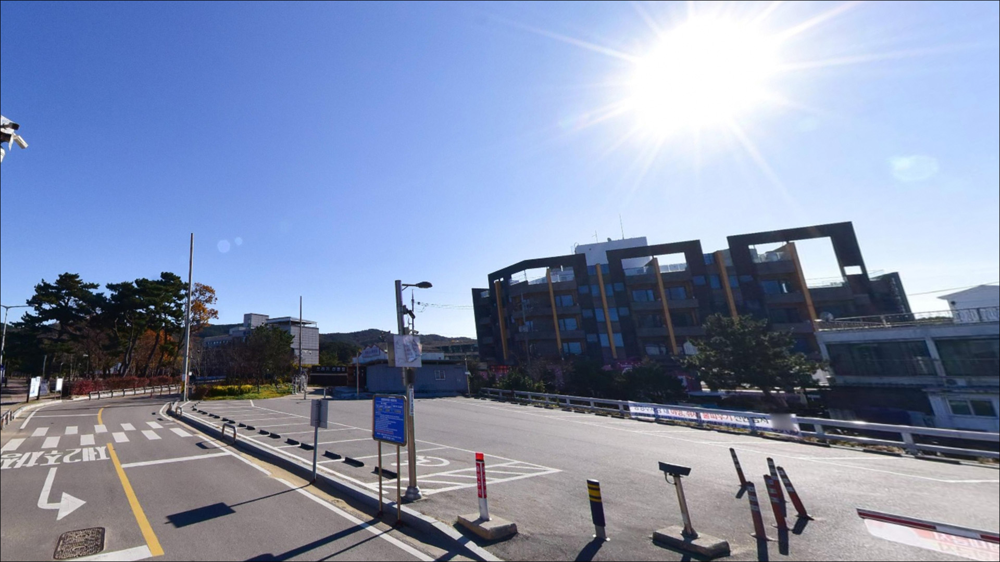
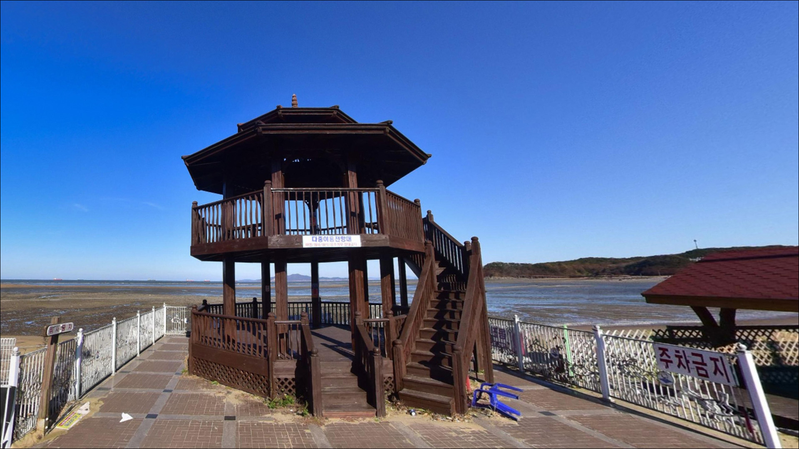
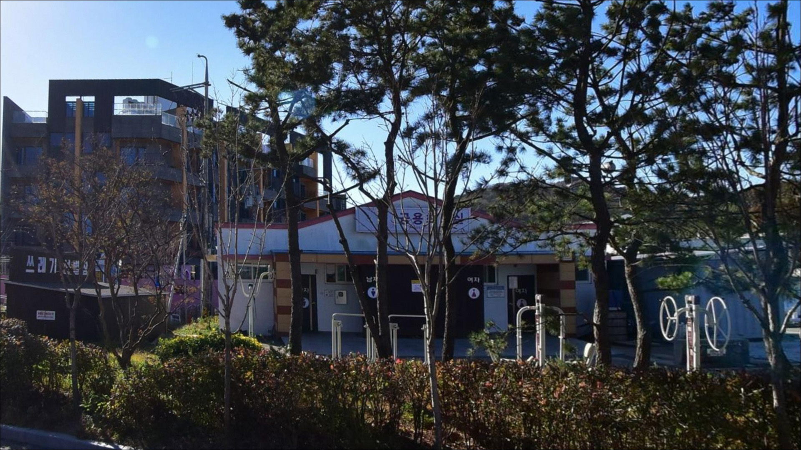

장경리 제2 공영주차장, 영흥도 인천 옹진군 고요함이 매력인 차박, 낚시 감성 장소
이 페이지에는 광고(제휴 링크 포함)가 있으며, 광고 링크를 통해 구매하면 운영자가 판매 수익 또는 수수료를 받을 수 있습니다. 포인트 사진: 카카오맵 스카이뷰·로드뷰. 이 페이지의 지도·사진 이미지는 카카오맵의 실제 서비스 이미지와 다를 수 있습니다.


포인트 안내
장경리 제2 공영주차장
인천 옹진군 영흥면 내리 1679-22
서해 해변형 포인트에서 가장 자주 발생하는 판단 실수는
물때를 고려하지 않은 채 도착 시각을 정하는 것입니다.
간조가 깊어지는 시간대에 해변에 도착하면
낚싯대를 내릴 수심 자체가 없는 상황을
마주칠 수 있는 구조입니다.
장경리해수욕장은 모래와 자갈이 혼합된
완경사 서해 해변으로,
조수간만의 차가 크게 작용하는 지형입니다.
만조 전후 시간대에 수심이 형성되고
조류가 움직이면서
원투낚시와 라이트 루어낚시 여건이 갖춰지는 편입니다.
이 글은
장경리 제2 공영주차장 기점의 낚시 진입 여건,
물때 기반 공략 타이밍, 차박 체류 조건에 집중합니다.
조황 단정이나 특정 어종 보장은
이 글의 범위에 포함되지 않습니다.

1. 위치와 진입 동선
영흥도는 선재대교·영흥대교를 통해
육지와 차량으로 연결된 섬입니다.
장경리해수욕장은 영흥도 서북쪽에 위치하며,
영흥로에서 분기되는 포장도로를 따라
진입하는 구조입니다.
경사나 협로 구간 없이
일반 승용차부터 SUV까지 무리 없이 접근할 수 있는
진입 여건입니다.
제2 공영주차장은 장경리해수욕장 인근에
조성된 포장 주차장입니다.
내부 라인이 정리된 공영주차장 구조여서
중형 차량 기준 회차와 주차 모두
비교적 여유 있는 편입니다.
해변까지 도보로 이동하는 거리로,
낚시 장비를 들고 이동하기에 부담이 적은
접근성입니다.
주차는 유료 운영 체계로 알려져 있습니다.
성수기(여름)에는 해수욕장 방문객이
집중되는 주간에
주차 공간 확보 경쟁이 발생할 수 있습니다.
낚시 목적이라면 이른 새벽이나
비성수기 평일 방문이
주차 여건 면에서 안정적입니다.

2. 차박 환경과 야간 체류 여건
차박이란 차량을 숙박 공간으로 활용하며
현장에서 하룻밤 머무는 여행 방식입니다.
장경리 제2 공영주차장은
해수욕장 배후 공영주차장 성격으로,
비성수기 평일 야간 기준으로는
통행량이 줄고 비교적 조용한 환경이
만들어지는 편입니다.
해변 서쪽이 외해 방향으로 열려 있어
서풍이 강한 날에는 바람 영향을 받는 편입니다.
기상청 풍속 예보를 확인하고
바람이 잦아드는 타이밍을 선택하는 것이
차박 체류 편의성을 높이는 기준입니다.
그늘막·텐트류를 펼치는 야영 행위는
공영주차장 운영 방침에 따라 제한될 수 있으므로
사전에 확인하는 편이 좋습니다.
장경리해변야영장이 해수욕장 인근에
공식 운영되는 구조이므로,
정식 야영이 목적이라면
야영장을 기준으로 일정을 잡는 편이 합리적입니다.
야영장은 매년 12월 말~2월 말 동계 휴장 기간이
있는 것으로 알려져 있습니다.


3. 주변 편의시설 현황
장경리해수욕장 주변은
펜션·식당·카페 등 관광 시설이
해변 인근 도로를 따라 분포하는 구조입니다.
간단한 식사나 식자재 보급은
인근 상가를 활용해 해결할 수 있는 편입니다.
다만 비성수기에는 영업 중인 곳과
문을 닫은 곳의 차이가 크므로
출발 전 인근 영업 여부를 미리 확인하는 편이 좋습니다.
공영주차장 내 전기차 충전 시설이
장경리 일대 공영주차장에 설치된 것으로
알려져 있습니다.
반경 10km권에는 영흥대교·진두선착장 일대가 있어,
주유소·편의점 등 기본 인프라를
이용할 수 있는 동선이 만들어집니다.
낚시 채비나 미끼 보급을 위한
전문 낚시용품점은 해변 바로 인근에서
기대하기 어려운 편입니다.
낚시 소품·예비 채비·미끼류는
출발 전 수원이나 인천 본토에서 갖추고
출발하는 것이 현실적인 준비 방식입니다.

4. 물때 모르고 가면 헛걸음이 되는 이유
장경리 해변 방문 전에 가장 먼저 확인할 것은
물때입니다.
서해 해변형 포인트에서 물때 확인은
낚시 성패를 가르는 가장 기본 조건입니다.
바다타임에서 인천·영흥도 기준 물때를 조회한 뒤
만조 전후 2시간 내 도착을
목표로 출발 시각을 잡는 것이 기본 전략입니다.
서해는 기상 변화가 빠른 편이어서
당일 아침 기상청 풍속·파고 예보를
한 번 더 확인하고 이동하는 것이
포인트 낭비를 막는 조건입니다.
해변 원투낚시를 운용할 경우
봉돌 손실이 발생할 수 있으니
여분 봉돌과 채비는 넉넉히 준비하는 편이 좋습니다.
서해 갯벌 구간으로 이동할 때는
간조 시 고립 위험이 있으므로
물이 빠지는 속도를 미리 파악해야 합니다.
갯바위나 갯벌 가장자리에서 낚시할 때는
구명조끼 착용과 미끄럼 방지 신발이
기본 안전 조건입니다.

5. 지형 기반 낚시 여건 분석
장경리해수욕장은 모래와 자갈이 혼합된
완경사 서해 해변 구조입니다.
해변 중앙은 모래사장이 주를 이루고,
좌우 끝단 방향으로 갯바위 지형이
형성된 것으로 알려져 있습니다.
밑걸림 부담 없이 원투를 운용하기에
비교적 편한 지형 조건이 중앙 구간에 형성되어 있습니다.
만조 전후에는 해변 가까이까지 물이 차오르면서
수심이 형성되고 조류가 움직이기 시작합니다.
이 타이밍에 숭어·농어 같은
회유성 어종이 해안선 쪽으로 접근하는 패턴이
이 해역에서 일반적입니다.
외항 방향이 열린 서해 해변 구조라
조류 흐름이 생기는 만조 전후 구간에
낚시 활성이 집중되는 편입니다.
해변 좌우 끝단의 갯바위 구간은
바닥 지형이 달라지면서
우럭·노래미 같은 바닥층 어종을
노려볼 수 있는 자리입니다.
가을철에는 망둥어 활성이 높아지는 경향이
이 해역 전반에서 알려진 패턴입니다.
최신 조황은 출조 전
"장경리 낚시 조황"으로 반드시 검색해
확인하시기 바랍니다.


6. 이 포인트에 어울리는 낚시 스타일
원투낚시가 이 포인트 지형에
가장 자연스럽게 맞는 방식입니다.
원투낚시란 무게 있는 봉돌을 달아
멀리 캐스팅한 뒤 바닥 어종을 노리는 낚시 방식입니다.
밑걸림 없는 모래 바닥 구간에서
채비를 멀리 날려 바닥 변화 구간을 탐색하는 방식이
이 해변 구조와 잘 맞습니다.
망둥어·붕장어·도다리 계열을 기대해 볼 수 있는
스타일입니다.
라이트 루어도 시도해볼 만한 방식입니다.
만조 전후 갯바위 주변에서
지그헤드 채비나 소프트베이트를 활용해
노래미·우럭을 노리는 방식이
이 포인트 지형 조건과 어울리는 편입니다.
해변 가장자리 갯바위 끝단 방향으로
캐스팅 방향을 잡으면 바닥 변화 구간을
효율적으로 탐색할 수 있습니다.
생활낚시(민장대·릴찌) 방식도
이 해변 특성에 맞는 스타일입니다.
만조 전후로 갯벌이 다시 물에 잠기는 구간에서
숭어·망둥어를 노리는 형태로,
무거운 장비 없이 가볍게 운용할 수 있습니다.
가을 망둥어 시즌에는
해변 가장자리 얕은 구간에서도 활성도가 올라오는
경향이 있는 편입니다.

7. 대안 포인트와 플랜 B 동선
장경리 해변이 간조로 수심이 부족하거나
성수기 혼잡으로 자리 잡기 어려운 상황이라면
진두항 방파제가 첫 번째 대안입니다.
진두항 방파제는 수심과 조류 여건이 갖춰진
방파제 구조로, 장경리 해변이 여의치 않을 때
가장 먼저 떠올릴 만한 대안 포인트입니다.
감성돔·망둥어·주꾸미 낚시 기록이
알려진 곳이기도 합니다.
진두항에서는 배낚시 출조업체도
여럿 운영되고 있어,
광어·우럭·참돔 타이라바 등
선상낚시를 함께 계획하고 싶은 낚시인에게도
진두선착장 방면 동선이 효율적입니다.
장경리에서 차량으로
10분 내외 거리에 위치해
당일 플랜 B로 유연하게 활용할 수 있습니다.
십리포해수욕장도 같은 영흥도 내
대체 해변 낚시 포인트입니다.
갯바위 지형이 발달한 구간이 있어
루어낚시를 병행하기 좋은 조건을 갖추고 있습니다.
영흥도 양로봉 갯바위(신노루 포인트)는
간출초 구간이 있어 조금 물때 전후
진입이 권장되는 포인트입니다.

수도권 서해 당일 낚시 거점으로
충분히 고려할 만한 포인트입니다
원투낚시나 라이트 루어로
서해 해변 분위기를 즐기고 싶은 낚시인이라면
장경리 제2 공영주차장은
수도권에서 육로로 접근 가능한
거점 포인트로 활용하기에 나쁘지 않습니다.
영흥대교를 통한 차량 진입이 편하고,
대안 포인트도 같은 섬 안에서
이동 가능한 구조입니다.
반면 물때 확인 없이 방문하거나,
성수기 주말에 별다른 준비 없이 간다면
주차 경쟁과 낚시 수심 부족이라는
두 가지 문제를 동시에 마주칠 수 있습니다.
물때, 기상, 계절, 이 세 가지를 먼저 맞추고
움직이는 것이 이 포인트를
제대로 활용하는 방법입니다.
낚시를 마치고 공영주차장에 차를 세운 채
서해 하늘을 바라보며 하룻밤 머무는 차박이라면,
비성수기 평일이라는 조건 아래
조용하고 기억에 남는 하룻밤이
될 수 있는 곳입니다.